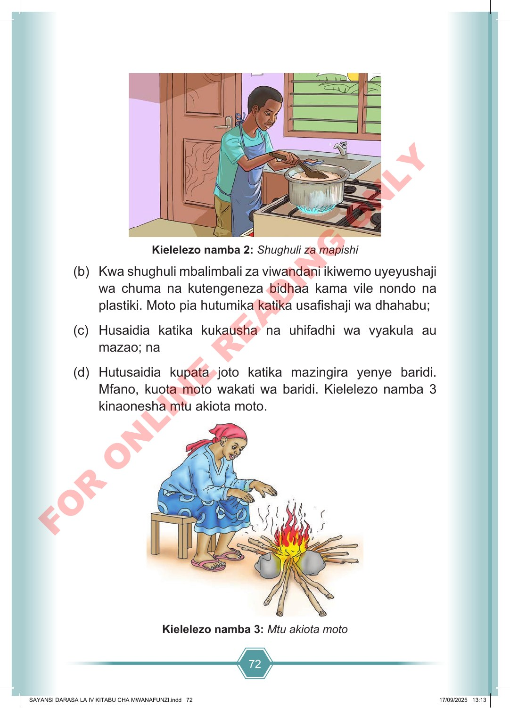

72 Kielelezo namba 2: Shughuli za mapishi (b) Kwa shughuli mbalimbali za viwandani ikiwemo uyeyushaji wa chuma na kutengeneza bidhaa kama vile nondo na plastiki. Moto pia hutumika katika usafishaji wa dhahabu; (c) Husaidia katika kukausha na uhifadhi wa vyakula au mazao; na (d) Hutusaidia kupata joto katika mazingira yenye baridi. Mfano, kuota moto wakati wa baridi. Kielelezo namba 3 kinaonesha mtu akiota moto. Kielelezo namba 3: Mtu akiota moto SAYANSI DARASA LA IV KITABU CHA MWANAFUNZI.indd 72 SAYANSI DARASA LA IV KITABU CHA MWANAFUNZI.indd 72 17/09/2025 13:13 17/09/2025 13:13 F O R O N L I N E R E A D I N G O N L Y